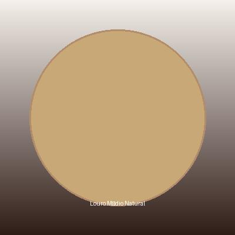
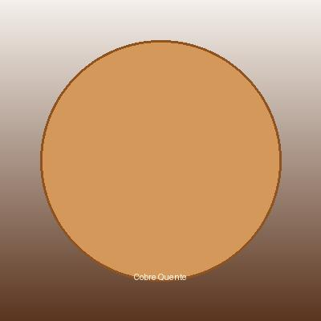
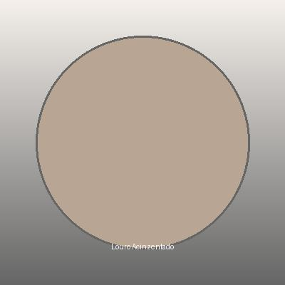
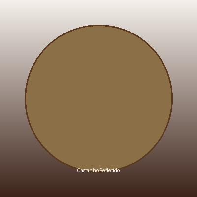
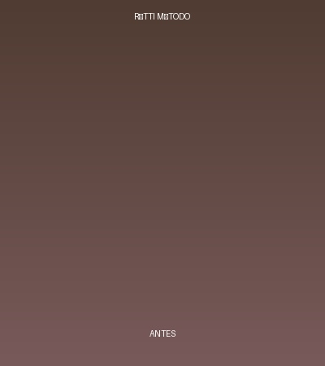
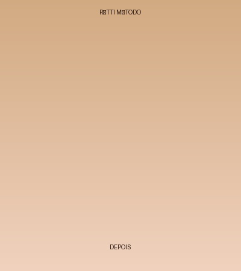

Conheça Eliane Reis
Especialista em Colorimetria Capilar
Eliane Reis é uma profissional renomada no universo da beleza e colorimetria capilar. Com years de experiência e dedicação à técnica, ela desenvolveu o método RÓTTI - uma abordagem inovadora e precisa para transformar cabelos.
Especialidade
Colorimetria precisa e personalizada
Método RÓTTI
Técnica profissional desenvolvida para excelência
Comunidade
Educação e mentoria para profissionais
Galeria de Trabalhos








Como Usar a Calculadora
O que é a Calculadora de Cores?
A Calculadora de Cores RÓTTI MÉTODO é uma ferramenta educacional que ajuda a compreender as proporções e resultados esperados ao misturar pigmentos e tonalizantes. Ela utiliza o método RÓTTI, desenvolvido pela Eliane Reis para precisão na colorimetria capilar.
Como Funciona?
- Selecione o pigmento: Escolha o tom base que deseja usar (1-10, sendo 1 o mais escuro e 10 o mais claro)
- Escolha o tonalizante: Selecione o tonalizante para neutralizar ou colorir o resultado
- Ajuste as proporções: Defina as porcentagens de cada ingrediente
- Visualize o resultado: Veja a cor resultante em tempo real
- Receba recomendações: Obtenha orientações sobre tempo de ação e compatibilidade
Importante: O que NÃO é a Calculadora
- NÃO é uma garantia de resultado exato
- NÃO substitui a experiência profissional
- NÃO considera fatores como histórico capilar, qualidade do pigmento e técnica de aplicação
- NÃO é substituto para teste de mecha
- Os resultados podem variar conforme o tipo de cabelo e pigmentação
Sistema de Níveis de Pigmento
O sistema RÓTTI utiliza uma escala de 1 a 10 para classificar os pigmentos:
| 1-2 | Pretos e castanhos muito escuros |
| 3-4 | Castanhos escuros a médios |
| 5-6 | Castanhos claros a louros escuros |
| 7-8 | Louros médios a claros |
| 9-10 | Louros muito claros a platinados |
Sobre o Método RÓTTI
O Método RÓTTI é uma abordagem profissional desenvolvida por Eliane Reis para garantir precisão na escolha de pigmentos e tonalizantes. O método considera:
- Proporcionalidade exata entre ingredientes
- Compatibilidade de níveis de pigmento
- Tempo de ação apropriado
- Previsibilidade do resultado final
Validade e Limitações
Esta calculadora é válida como ferramenta educacional para entender proporções. No entanto:
- Sempre fazer teste de mecha antes de aplicar em todo o cabelo
- Resultados reais variam conforme técnica de aplicação
- Qualidade e concentração dos pigmentos afetam o resultado
- Histórico capilar influencia fortemente o resultado final
Dicas Profissionais
- Sempre prepare seus ingredientes antes de começar
- Use técnica correta de aplicação
- Respeite o tempo de ação recomendado
- Mantenha a qualidade dos seus produtos
- Oferça pós-coloração de qualidade
Calculadora de Cores
Selecione seus Ingredientes
Resultado
Recomendação
Indicações de Produtos
Conheça os produtos recomendados para excelência profissional
Pigmentos
Tonalizantes
Produtos de Cuidado
Videoteca
Conteúdo educacional sobre colorimetria capilar
Introdução à Colorimetria Capilar
Aprenda os fundamentos da colorimetria e como escolher a cor perfeita
Método RÓTTI - Técnica Profissional
Conheça a técnica exclusiva desenvolvida para precisão na colorimetria
Mistura de Pigmentos e Tonalizantes
Aprenda as proporções corretas para obter o resultado desejado
Antes e Depois - Transformações
Veja transformações reais usando o método RÓTTI MÉTODO
Cuidados Pós-Coloração
Saiba como manter a cor vibrante e saudável pelo maior tempo
Dúvidas Frequentes sobre Colorimetria
Respostas para as principais dúvidas profissionais